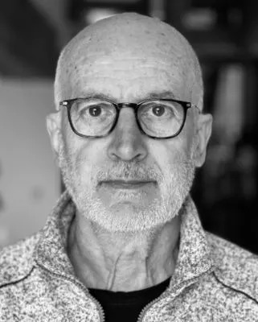
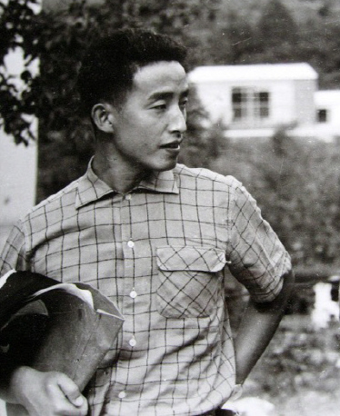
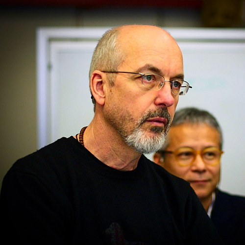

Ange Leccia
Ange Leccia (born 19 April 1952) is a contemporary French painter, photographer and film-maker. He works in Paris primarily with photography and video.\
Leccia was born in Minerbio, Barrettali commune, in Corsica, and studied fine arts. Initially he was engaged in both painting and photography, but as time passed he devoted himself more to photography and video as his chosen media.
Leccia is a lecturer at the École nationale supérieure d'arts de Cergy-Pontoise (ENSAPC). He also directs research for young artists at the Palais de Tokyo in Paris.
Leccia's first film was the short, Stridura, in 1980. In December 2004, his film Azé, made in 1999, was released. Like his earlier work, such as the shorts Île de beauté (Island of Beauty) (1996) and Gold (2000), both co-produced with Dominique Gonzalez-Foerster, in Azé Ange Leccia continued to stress the light and sound effects.[1]

Pai Nam June
As a pioneer of video art his influence was from a student he met at CalArts named Sharon Grace he described her as "pure genius" from the moment they met.[citation needed] The two met while she was filming fellow students at random with her Sony Portapak as an artistic sociological practice akin to the artist in the studio. This led to TV Buddha and people's model of the internet as we know it today with such art pieces as "Send / Receive". The artwork and ideas of Nam June Paik were a major influence on late 20th-century art and continue to inspire a new generation of artists. Contemporary artists considered to be influenced by Paik include Christian Marclay, Jon Kessler, Cory Arcangel, Ryan Trecartin and Haroon Mirza.[44]
Nam June Paik's work was first screened in South Korea on March 20, 1974, at the United States Information Center in Seoul.[54]: 196 The artist Park Hyunki was among the audience (which featured Paik's Global Groove); the screening notably inspired Park Hyunki to first experiment with video.[54]: 196
A documentary film directed by Amanda Kim about Paik's life entitled Nam June Paik: Moon Is the Oldest TV was released in 2023.

Lydia Dumbassina
As a pioneer of video art his influence was from a student he met at CalArts named Sharon Grace he described her as "pure genius" from the moment they met.[citation needed] The two met while she was filming fellow students at random with her Sony Portapak as an artistic sociological practice akin to the artist in the studio. This led to TV Buddha and people's model of the internet as we know it today with such art pieces as "Send / Receive". The artwork and ideas of Nam June Paik were a major influence on late 20th-century art and continue to inspire a new generation of artists. Contemporary artists considered to be influenced by Paik include Christian Marclay, Jon Kessler, Cory Arcangel, Ryan Trecartin and Haroon Mirza.[44]
Nam June Paik's work was first screened in South Korea on March 20, 1974, at the United States Information Center in Seoul.[54]: 196 The artist Park Hyunki was among the audience (which featured Paik's Global Groove); the screening notably inspired Park Hyunki to first experiment with video.[54]: 196
A documentary film directed by Amanda Kim about Paik's life entitled Nam June Paik: Moon Is the Oldest TV was released in 2023.

Bill Viola
Viola's art deals largely with the central themes of human consciousness and experience – birth, death, love, emotion, and a kind of humanist spirituality. Throughout his career he drew meaning and inspiration from his deep interest in mystical traditions, especially Zen Buddhism, Christian mysticism, and Islamic Sufism, often evident in the transcendental quality of some of his works.[20] Equally, the subject matter and manner of western medieval and renaissance devotional art informed his aesthetic.
He often explored dualism, or the idea that comprehension of a subject is impossible unless its opposite is known. For example, a lot of his work has themes such as life and death, light and dark, fire and water, stressed and calm, or loud and quiet.[21]
His work can be divided into three types, conceptual, visual, and a unique combination of the two. Gardner feels that Viola's visual work, such as "The Veiling", and his combination of both the conceptual and visual, such as "The Crossing," are impressive and memorable.
Viola's work often exhibits a painterly quality, with his use of ultra-slow motion video encouraging the viewer to sink into the image and connect deeply to the meanings contained within it. This quality makes his work perhaps unusually accessible within a contemporary art context. As a consequence, his work often receives mixed reviews from critics, some of whom have noted a tendency toward grandiosity and obviousness in some of his work.[22]